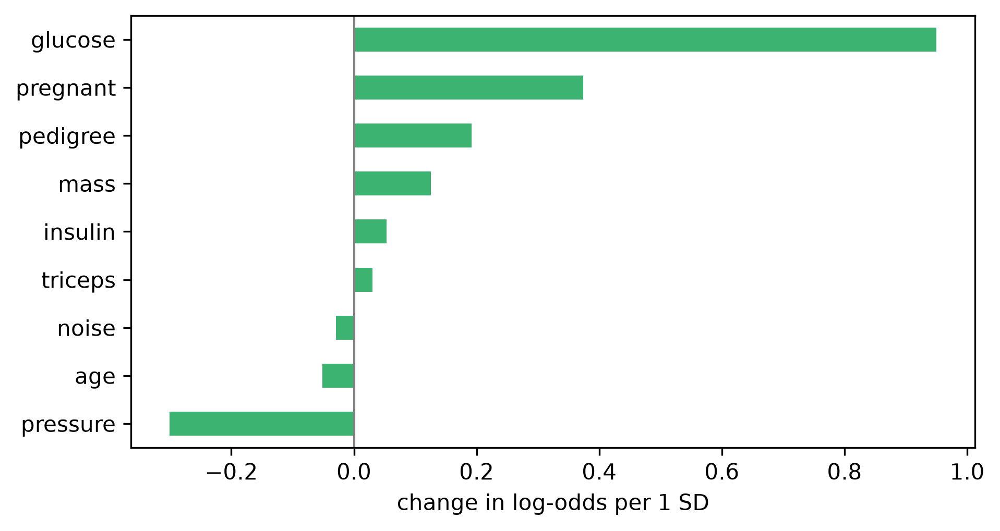

Compute SHAP values for a fitted forest and check that they add up to the prediction.
Read a beeswarm plot and a force plot, and say in one sentence what the model did for one named patient.
Say why a SHAP summary and a logistic regression coefficient are not comparable until one of them is rescaled.
34.2 Why this, here
Chapter 33 gave you two rankings, both of them averages over 231 people. Neither can answer the question a clinician actually asks in front of a patient: why this number, for her? SHAP answers exactly that, and then lets you average the per-patient answers back up into a global picture. It is the most useful tool on this day and the easiest to overclaim with, which is why it sits between the measure that was plainly describing the model (6.1) and the chapter that says so in R (Chapter 35).
NoteThis chapter is Python only
shap is a Python library with no equivalent of comparable maturity in R. R gets its local explanations from DALEX in Chapter 35, by a different algorithm (sampling-based Shapley values) that answers the same question. Read this chapter even if you intend to work in R: the ideas transfer and the plots are the ones you will be shown by other people.
34.3 The model, again, and its SHAP values
Each chapter is a fresh session, so we refit the forest from Chapter 33 — same data, same split, same control column.
import numpy as np, pandas as pdimport matplotlib, matplotlib.pyplot as pltimport shap# trim the surrounding whitespace when a figure is saved; shap's force plot# draws outside the axes and is otherwise clipped at the topmatplotlib.rcParams["savefig.bbox"] ="tight"from sklearn.model_selection import train_test_splitfrom sklearn.ensemble import RandomForestClassifierfrom sklearn.linear_model import LogisticRegressionfrom sklearn.metrics import roc_auc_scoredia = pd.read_csv("data/diabetes.csv")y = (dia["diabetes"] =="pos").astype(int)X = dia.drop(columns=["diabetes"]).copy()X["noise"] = np.random.default_rng(42).normal(size=len(X)).round(2)X_train, X_test, y_train, y_test = train_test_split( X, y, test_size=0.3, random_state=123, stratify=y)rf = RandomForestClassifier(n_estimators=300, random_state=123).fit(X_train, y_train)auc = roc_auc_score(y_test, rf.predict_proba(X_test)[:, 1])print("test AUC", round(auc, 3))
#> test AUC 0.756
A SHAP value is one number per patient per variable: how much that variable moved this patient’s predicted probability away from the base value, where the base value is the average prediction over the training rows. The values are constructed so that they add up exactly:
with \(\phi_0\) the base value and \(\phi_{ij}\) the contribution of variable \(j\) to patient \(i\). That identity is the whole reason SHAP is worth more than an importance bar chart: it is an exact decomposition of a specific prediction, not a summary statistic.
print("base value", round(base, 3), " training prevalence", round(y_train.mean(), 3))
#> base value 0.366 training prevalence 0.365
The base value is the training prevalence, as it must be: with no information about a patient, the forest’s best guess is the average.
NoteHow long this takes, and what to do if it is slow
TreeExplainer is exact for forests and it explains these 231 test patients in well under a second. Cost grows with the number of patients, trees and tree depth, so a larger forest or the full 768 rows will take longer. If it does, explain a random subsample — X_test.sample(100, random_state=1) — and say in your write-up that you did. A beeswarm of 100 patients looks almost identical to one of 231; a mean absolute SHAP value computed from 100 is a little noisier.
34.4 Global view 1 — the bar plot
Averaging \(|\phi_{ij}|\) down the patients gives a global importance: how much this variable moves predictions, in probability units, for a typical patient.
The bar plot throws away everything except the magnitude. The beeswarm keeps it: one dot per patient per variable, placed at its SHAP value, coloured by how high that patient’s value of the variable was. Draw it, then run the control check on the mean absolute SHAP values.
# Replace every ______ below, then run this cell.import sys; sys.path.append("checks")from checks import*shap.summary_plot(______, X_test, show=False, plot_size=(6.5, 4))plt.tight_layout(); plt.show()shap_importance = pd.Series(np.abs(______).mean(axis=0), index=X.columns)check_noise_control(shap_importance)
TipStuck?
Both blanks want the same object: the matrix of SHAP values for the positive class that you built above. np.abs() and .mean(axis=0) collapse it down the patients.
Read three things off the beeswarm before you move on.
Glucose: the red dots are on the right. High glucose pushes the prediction up, consistently, and by up to 0.4 in probability.
Pressure and triceps: a vertical smudge at zero. The model barely uses them.
noise: a smudge too — but a slightly wider one than pressure’s, and the control check fails again, at around 12% of glucose. SHAP is honest about the model, and the model does use the noise column.
34.6 Local view — one patient
Now the thing the averages could not do. Patient 0 of the test set:
Read the force plot as a tug of war on one number. It starts at the base value and ends at this patient’s prediction; red segments push right, blue segments push left, and the width of each is its SHAP value. For this patient a glucose of 167 contributes about +0.31 on its own — more than everything else put together.
Now the sentence that this chapter exists for. The model gave this patient a predicted probability of about 0.71. She does not have diabetes. The force plot is still entirely correct: it is a faithful account of how the forest arrived at 0.71. It is not an account of her physiology, and if you read it aloud as “her high glucose is driving her diabetes risk” you have changed the subject without noticing.
34.7 Task 2 — Check the arithmetic
The additivity identity above is a claim you can test. Pick any patient, add the base value to their SHAP values, and compare with the model’s prediction.
# Replace every ______ below, then run this cell.import sys; sys.path.append("checks")from checks import*j =17# any row of the test setreconstructed = ______ + phi[j].sum()predicted = rf.predict_proba(X_test.iloc[[j]])[0, 1]print(round(reconstructed, 6), round(predicted, 6))check_metric_range(abs(reconstructed - ______), 0, 1e-6, "reconstruction error")
TipStuck?
The identity has three parts: the base value, the sum of this patient’s contributions, and the prediction. Two of them are already on the line.
The error is of the order of \(10^{-16}\). TreeExplainer is not approximating here — for a tree ensemble it computes the Shapley values exactly.
34.8 A fairer comparison — logistic regression coefficients
The usual next slide puts SHAP next to the coefficients of a logistic regression and invites you to compare the two rankings. Done naively that comparison is meaningless, and it is worth seeing why.
lr = LogisticRegression(max_iter=1000, solver="liblinear", random_state=123).fit(X_train, y_train)print("logistic regression test AUC", round(roc_auc_score(y_test, lr.predict_proba(X_test)[:, 1]), 3))
#> logistic regression test AUC 0.762
coef = pd.Series(lr.coef_[0], index=X.columns)print("\nraw coefficients, log-odds per unit:")
The largest coefficient by a factor of five belongs to pedigree. That is an artefact of the units: pedigree runs from about 0.08 to 2.4, while glucose runs to 199, so a coefficient “per unit” means something a hundred times smaller for glucose. Multiply each coefficient by the training standard deviation of its variable and you have the change in log-odds per standard deviation, which is comparable across variables.
fig, ax = plt.subplots(figsize=(6.5, 3.5))coef_sd.plot(kind="barh", ax=ax, color="mediumseagreen")ax.axvline(0, color="grey", linewidth=1)ax.set_xlabel("change in log-odds per 1 SD")fig.tight_layout(); plt.show()

On that scale glucose is the largest by a wide margin and pedigree has dropped to fourth. The ranking reversed because of a unit conversion, not because of anything in the data.
Two further things are worth noticing. The logistic regression’s test AUC is about the same as the forest’s: the black box bought you nothing here, which is worth remembering before you spend a day explaining it. And pressure gets a substantial negative standardised coefficient while the forest gives it almost no SHAP at all — two models of the same data disagreeing about a variable, which is a fact about the models.
34.9 Task 3 — Put the four measures side by side
Build one table with a column per method, each scaled to its own maximum so the columns are on a common footing, and read off where the control sits in each.
# Replace every ______ below, then run this cell.from sklearn.inspection import permutation_importanceperm = pd.Series(permutation_importance( rf, X_test, y_test, n_repeats=20, random_state=123, scoring="roc_auc").importances_mean, index=X.columns)comparison = pd.DataFrame({"impurity": pd.Series(rf.feature_importances_, index=X.columns),"permutation": perm,"mean |SHAP|": pd.Series(np.abs(phi).mean(axis=0), index=X.columns),"|coef| per SD": ______,})comparison = comparison / comparison.______()print(comparison.round(2).sort_values("mean |SHAP|", ascending=False))
TipStuck?
The fourth column is the standardised coefficients you just computed, without their signs — importance measures have no direction, so take the absolute value. Scaling a data frame by its column maxima is one method call.
Every column agrees that glucose is first. Below that they disagree about almost everything, and the noise row is between 0 and 0.37 depending on which method you happened to run.
34.10 The result that should bother you
An explanation does not know whether the model is any good. Here is the same forest fitted to the same predictors with the outcome column shuffled, so that there is no relationship left to learn.
y_shuffled = np.random.default_rng(0).permutation(y_train.values)rf_null = RandomForestClassifier(n_estimators=300, random_state=123).fit(X_train, y_shuffled)print("test AUC of the shuffled-label forest:",round(roc_auc_score(y_test, rf_null.predict_proba(X_test)[:, 1]), 3))
The AUC is about 0.47 — worse than a coin toss. The beeswarm is still a beeswarm: variables are ranked, dots are coloured, one predictor leads the others by a clear margin. The contributions are about a third the size of the real model’s, which you would only notice by looking at the axis, and shap will not tell you.
SHAP explains the function the model computes. It has no access to the outcome, so it cannot know the function is worthless.
Therefore a SHAP plot is never evidence that a model works. The evidence that a model works is a held-out score against a baseline, and it has to come first.
And the ordering in a SHAP plot of a model that does not work is just the ordering of its overfitting.
34.11 Reflection
A colleague shows you a beeswarm plot in a slide deck. Write down the two questions you would ask before reading anything off it.
The force plot for patient 0 was a correct explanation of a prediction that was wrong about the patient. Explain, in one sentence each, what the plot does and does not license you to say.
SHAP values for this model are in probability units and sum to the prediction. What would be lost if they were reported on the log-odds scale instead, and what would be gained?
34.12 Stretch
NoteStretch 1 — Two patients with the same prediction
Find two test patients whose predicted probabilities agree to within 0.01 and plot a force plot for each. If the explanations differ, what does that tell you about the model that the prediction alone did not?
NoteStretch 2 — Explain the logistic regression instead
shap.LinearExplainer gives SHAP values for the logistic regression. Compute them and compare with the standardised coefficients. They should agree almost exactly, and the reason they do tells you what SHAP adds for a forest and does not add for a linear model.
34.13 What you can and cannot now claim
Can: that for this forest, this patient’s prediction of 0.71 decomposes exactly into a base rate of 0.37 plus a set of contributions dominated by glucose; and that the same decomposition, done on a model that cannot predict anything, looks much the same.
Cannot: that glucose caused anything, that lowering it would lower the prediction for a future patient, or that the forest has found something about diabetes. The first of those needs a causal question asked properly; the others need an experiment. Chapter 35 asks the same questions in R, and adds the one plot that at least looks like an intervention — and shows why it is not one.